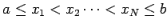

Inhalt Index DeskTop Bronstein

 Numerische Mathematik Approximation, Ausgleichsrechnung, Harmonische Analyse Tschebyscheff-Approximation
Numerische Mathematik Approximation, Ausgleichsrechnung, Harmonische Analyse Tschebyscheff-Approximation


Von der stetigenTSCHEBYSCHEFFschen Approximationsaufgabe
| (19.202) |
kommt man zur zugehörigen diskreten Aufgabe, indem man N Stützstellen ; mit der Eigenschaft  wählt und
fordert. Substituiert man
| (19.204) |
dann folgt daraus unmittelbar
Durch Auflösen der Beträge in (19.205) erhält man ein System von linearen Ungleichungen für die Koeffizienten ai und  , so daß aus (19.203) die lineare Optimierungsaufgabe
, so daß aus (19.203) die lineare Optimierungsaufgabe
wird. Die Gleichung (19.206) besitzt eine Minimallösung mit . Für eine hinreichend große Anzahl N von Stützstellen kann unter bestimmten Bedingungen die Lösung der diskreten Aufgabe als Näherung für die Lösung der stetigen Aufgabe angesehen werden.
Verwendet man an Stelle der linearen Näherungsfunktion eine Näherungsfunktion , die nichtlinear von den Parametern abhängt, dann erhält man in analoger Weise eine Optimierungsaufgabe, und zwar eine nichtlineare Optimierungsaufgabe, die in der Regel schon bei einfachen nichtlinearen Ansätzen nicht konvex ist. Das ist eine wesentliche Einschränkung im Hinblick auf die Wahl numerischer Lösungsverfahren für
nichtlineare Optimierungsaufgaben.